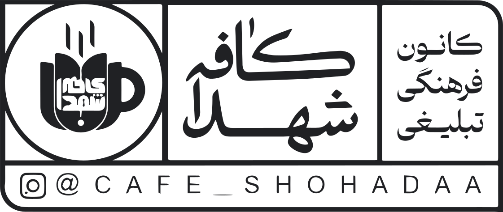

انتخاب کنید
صفحه اصلی
کسب اطلاعات بیشتر
پروژه ساخت مقبره شهید گمنام در موکب عزیزم حسین (ع)

در حال بارگزاری
با استفاده از
یک انگشت
بچرخید
و با استفاده از
دو انگشت
حرکت
کنید.
مشاهده بنای زیرین
بازگشت به حالت اولیه
طول زمین
۵۰ متر
عرض زمین
۱۸ متر
عمق زمین
۵ متر